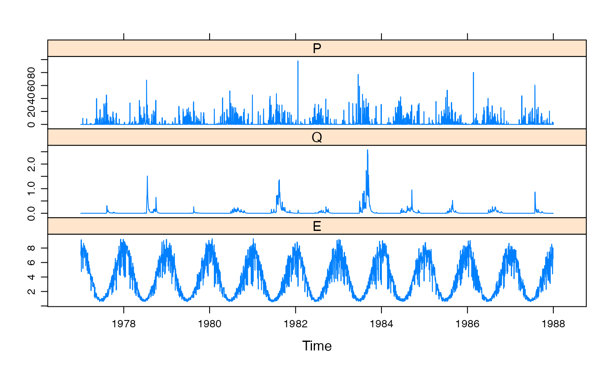

R/Canning.R
Canning.RdDaily rainfall, streamflow and potential evaporation for Canning River at Scenic Drive upstream of Canning Dam (Western Australia), from 1977-01-01 to 1987-12-31. The catchment area is 517 square kilometers.
CanningA zoo object, of class "zooreg", "zoo". It
is a regular time series indexed by days, in Date format.
There are three columns, P (areal rainfall, mm/day) and Q
(streamflow, mm/day). E (potential evapotranspiration, mm/day).
Talk to Barry Croke...
The Canning River is a tributary of the Swan River, and is located South East of Perth, Western Australia.
Daily areal rainfall (mm/day). Origin unknown, probably spatial interpolation by Barry Croke.
Daily mean streamflow (mm/day). Stream gauge ID 616024 "Canning River at Scenic Drive". Latitude -33.4176; Longitude 115.9817.
Origin Unknown.
data(Canning)
summary(Canning)
#> Index P Q E
#> Min. :1977-01-01 Min. : 0.000 Min. :0.00000 Min. :0.530
#> 1st Qu.:1979-10-02 1st Qu.: 0.000 1st Qu.:0.00000 1st Qu.:1.450
#> Median :1982-07-02 Median : 0.000 Median :0.00000 Median :3.430
#> Mean :1982-07-02 Mean : 2.449 Mean :0.04385 Mean :3.828
#> 3rd Qu.:1985-04-01 3rd Qu.: 0.800 3rd Qu.:0.02500 3rd Qu.:6.010
#> Max. :1987-12-31 Max. :98.000 Max. :2.58100 Max. :9.300
xyplot(Canning)
